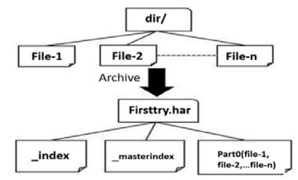
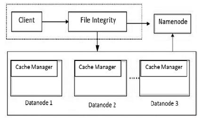
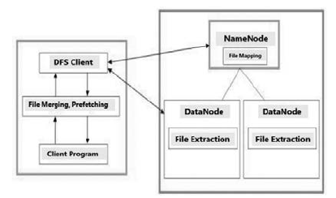
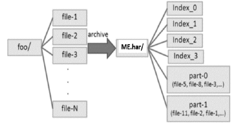
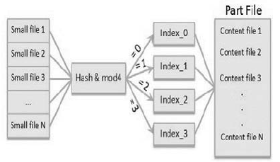
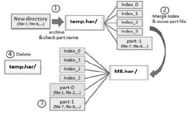
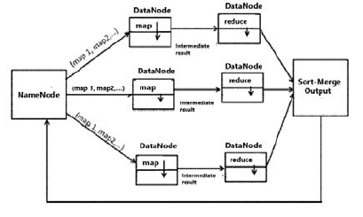
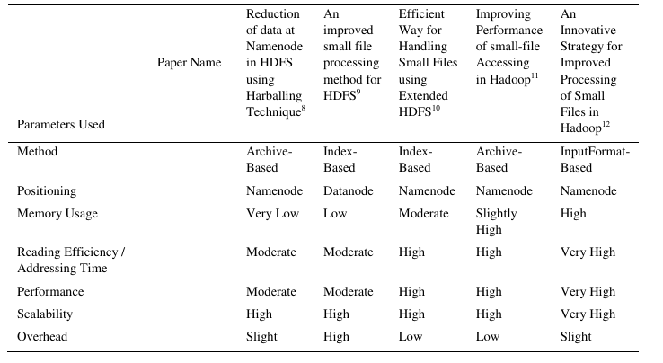

Dealing with Small Files Problem in Hadoop Distributed File System.
处理 Hadoop 分布式文件系统中的小文件问题
原文→ Dealing with small Files Problem in Hadoop Distributed File System
Abstract
随着近些年来 Hadoop 的广泛使用，由于 Hadoop 可以很好地处理结构化和非结构化数据，一些知名的大用户如 Yahoo，Facebook，Netflix 以及 Amazon 等都主要使用 Hadoop 来做非结构化数据分析。Hadoop 分布式文件系统（HDFS）意味着它可以存储海量文件，但当需要存储大量小文件时，因为这所有的小文件均由单个服务器节点（Namenode）进行管理，HDFS 将会遇到些许问题。针对该问题，相关研究提出了许多方法，本文主要对比分析这些方法处理 HDFS 小文件问题的表现。
1. Introduction
开发人员使用 HDFS 的唯一理由便是它提供了无限存储的能力。HDFS 能够处理 GB 或 TB 级别的文件，Hadoop 可在少量大型文件场景下很好地工作，但无法在大量小型文件场景下良好地工作。这是因为大量的小文件会占用 Namenode 大量的内存，且每个小文件会生成一个 map 任务，太多 map 任务会导致数据输入效率低下，在 HDFS 中存储及处理小文件会对 MapReduce 程序产生额外的开销，这极大地影响了 Namenode 的性能。
HDFS 不能很好处理小文件的原因如下：
对每个小文件的处理，至少对应要处理一个 block，这会导致大量的 block 的大小是小于配置的 block 大小（默认 128MB）的，从 HDFS 配置 block 大小的原因，我们可以知道读取这些大量的小 block 将会非常地耗费时间；
Namenode 会为每个文件和 block 维护一条元数据记录并存储于内存中，大量的小文件意味着需要更多的内存空间。
Hadoop 将 block size 配置为 128 MB 的原因？
这样做的目的主要是为了减少文件 block 检索的开销（cost of seeks）- block 足够大的情况下，可使数据传输占用的时间要远多于数据块检索所花费的时间。
对于 Hadoop block 块该配置多大，通常可以这样快速进行计算：假设磁盘检索时间需要 10ms，传输速率为 100 MB/s，要使检索时间占传输时间的 1%，我们需要将 block 配置为大约 100 MB 左右。虽然 HDFS 默认 block size是 128 MB，但不少 HDFS 用户会使用更多的 block size。
随着下一代磁盘传输速度的提升，block size 还可以相应地进行提高，但该参数不建议设置太大，毕竟 MapReduce 的 map 任务单次只能处理一个 block，如果 block size 配置过大，可能导致 map 任务数减少（小于集群中的节点数），进而导致作业运行速度慢于它本能跑的速度。
2. Literature Review
该文献调查的目的看看现已有哪些研究针对 HDFS 的小文件问题提供了解决方案。
2.1 HDFS and MapReduce
Apache Hadoop 中有两大主要组件：HDFS 和并行处理框架 MapReduce。
- HDFS 是 Hadoop 的文件系统或存储层，主要设计用于流式数据访问模式下存储非常大型的文件，运行于集群之上；
- MapReduce 是一个编程模型，可用于处理和生成大型数据集。
2.2 Related Work
- Vaibhav Gopal Korat, Kumar Wwamy Pamu 提出了一种 Hadoop 压缩技术(HAR)，可减少 Namenode 节点上数据存储的开销，并通过减少 MapReduce 程序中的 map 操作来提升相应的程序性能。
- Jilan Chen, Dan Wang, Lihua Fu, Wenbing Zhao 提供了一种方法（Improved HDFS），该方法通过将同目录下的小文件合并成一个大文件，并为每个小文件生成相应的索引，以提高小文件的存储效率和减少 Namenode 的元数据开销。此外，他们还提供了一种缓存策略来提高小文件的读取效率。
- Kashmira P. Jayakar, Y.B.Gurav 提出了一个称为扩展 Hadoop 分布式文件系统（EHDFS）的方案。在该方案中，一组相关的小文件将会被合并成单个大文件，以减少文件数量。对于合并成的大文件，将会构建一种索引机制来访问合并文件中的独立文件。更多的，还采用了索引预读取（index prefetching）来提高 I/O 的性能和减少 Namenode 的负载。
- Chatuporn Vorapongkitipun, Natawut Nupairoj 提供了一种基于 Hadoop Archive (HAR) 改进的 New Hadoop Archive (NHAR) 方法。该方法最大化了元数据的内存使用，并提升 HDFS 中小文件的访问能力。因为 HAR 不允许向已存在的压缩文件中添加文件，NHAR 做了相应的改进，使得可以向已存在的压缩文件添加额外的文件。
- Priyanka Phakade, Dr. Suhas Raut 设计了一种改进的模型用于处理小文件，该方法通过修改
InputFormat类来实现性能的提升。InputFormat将会改为支持将多个文件合并成单个分片，使 map 任务可以处理更多的数据输入。不同于原先的 HDFS 系统，处理大量小文件所需的时间将会被大大地减少，此外，为充分地利用并行度，将会使用多个 reducer。
3. Different Techniques to deal with small files problem
3.1 Hadoop Archive
Hadoop Archive (HAR)，一种基于压缩的技术，能够高效地将多个小文件打包压缩成 HDFS block。HAR 中的文件可以直接访问，不需要解压（该过程是在内存中完成）。

创建 HAR 可减少 Namenode 上的数据存储的开销，并减少 MapReduce 程序中的 map 任务数，从而提高性能。
HAR 文件的创建：通过 Hadoop archive 命令
1 | hadoop archive -archiveNmae -name -p <parent><src>* <dest> |
该命令将会启动一个 MapReduce 作业将给定文件压缩进少量的 HDFS 文件中。
示例：
1 | hadoop archive -archiveName firsttry.har -p /user/hadoop dir1 dir2 /user/rovo98 |
HAR文件结构开销：文件访问需要两次索引文件（index-file）读和一次数据文件（data-file）读操作。要访问相应的文件，需要访问 har 中包含的元数据中的索引。
相比于 HDFS 中的文件读取，读取 HAR 中的文件效率要更低更慢。升级 HAR 需要 HDFS 的架构也做相应的变更，这是很困难的。
3.2 Improved HDFS
Improved HDFS 结构包含两部分：
负责将小文件集成进一个大文件的客户端组件（client component）；和负责缓存资源管理的数据节点组件（data node component）。

Improved HDFS 模型是基于索引的（index-based）。取决于文件的依赖性，同一目录下的文件会被集成进同一个大文件中，并会每个小文件构建相应的索引，以减少这些小文件的 Namenode 上的开销。
缓存策略（Cache policy）则是为了提高小文件访问的效率。cache manager （缓存管理器）位于 Datanode 中，当每次需要读取小文件时，会优先检索缓存中的数据，如果缓存数据未命中才会从 Datanode 的磁盘进行检索。
文件集成的设计（The Design of file integration）: 每个大文件中包含一个索引文件，该索引文件记录了每个原始的小文件的偏移量（offset）和长度（length）。
文件集成的处理过程:
- 将目录下的小文件进行排序，然后将它们依次写入到相应的大文件中；
- 确定小文件的总数量；
- 确定文件集成后的大文件的大小，并和 HDFS block 默认大小进行比较；
基于每个小文件的 offset 及 length 创建出相应的索引文件。如要将大文件存储于单个 block 中，则要求大文件的整体的大小应小于 block size。否则，将使用多个 block 来存储该大文件。
3.3 Extended HDFS
扩展 HDFS (extended HDFS) 同样是基于索引的，当索引文件中小文件的数量非常大时，索引的更新将会变得非常困难，因此该方法采用一种预读取方案来提高 HDFS 的读性能。
EHDFS 提供了一种改进的索引机制及索引信息的预读取技术。其中有四种技术（file merging、file mapping、prefetching、file extraction）在提升 HDFS 处理小文件效率方面起了很关键的作用。
总体系统结构及各模块的交互情况如下：

File Merging: 在文件合并阶段，Namenode 仅维护合并后的文件的元数据，而不是它包含的所有小文件。除文件数据外，每个 block 的起始位置都会放置一个索引表。该索引表包含了该 block 中每个小文件的索引信息，即每个索引表项目都是一个 (offset, length) 对。文件合并后的 block 结构如下图所示:
扩展后的 block 表示合并文件的一部分。和其他正常的文件 block 一样，extended block 也存放在 HDFS Datanode 中。
File Mapping: 该过程由 Namenode 执行，文件映射是将小文件名映射至包含该文件的合并文件 block的过程。要获取目标小文件的位置，请求需要将小文件和相应合并文件名发送给 Namenode。
对于每个合并文件，Namenode 会维护一个 ConstituentFileMap 数据结构。小文件名和包含该小文件名的合并文件中的逻辑块号会进行映射。Namenode 还会维护一个“索引项目号（index entry number）“，该索引项目号指向索引表中的项目。下图展示了一个 temp 合并文件的 ConstituentFileMap 数据结构：
Prefetching: 上述的文件合并并不会提升读操作的性能，它仅仅减少了 Namenode 中元数据存储的开销。对于小文件的读取仍会给 Namenode 带来较大的负载，这也将会成为系统的性能瓶径。EHDFS 通过使用预读取文件元数据的框架解决了该瓶径问题。
File Extraction: 该过程由 Datanode 执行。文件提取是从一个数据块中提取目标文件内容的过程。
当客户端读取一个文件时，会同时指定小文件名称和合并文件的名称，这些信息将会被用于：
- 获取包含该文件数据的 block 块；
- 获取存放相应数据块的 Datanode；
- 从 Namenode 获取索引项目号；
3.4 New HAR
NHAR 的基本思想主要包含以下两点：
- 将小文件合并成大文件，以减少文件数量并优化访问的性能；
- 扩展 HAR 的文件管理的功能，使其与传统文件系统相似；
NHAR 重构了索引结构来改进 HDFS 的元数据主体框架，并实现在不变更 HDFS 架构的情况下提升了文件访问的性能。新的设计允许 NHAR 能够将额外的文件添加到已存在的 HAR 压缩文件中。
对于 HAR 的文件访问，是需要访问两次索引的，这必然会导致不必要的开销。因此，为了提高访问的性能，NHAR 模型采用了单级索引（single-level index）。NHAR 使用索引信息创建了一个 hash table ，而不是 master-index 方案，这些索引信息会被分配到多个索引文件中，如下图所示:

定位包含目标元数据的索引文件，取决于现有索引文件的数量。将文件的名称 hash 后模现有索引文件数，得到的便是目标索引文件。
与 HAR 类似，实际的文件数据存放于 part 文件中，下图展示了 NHAR 的 hash 机制：

在 HAR 方案中，如果要向已有 HAR 压缩文件中添加新的文件，则需要创建出一个新的 HAR 文件，效率非常低。而采用 NHAR 方案后，我们可以直接将文件插入到现有的 NHAR 文件中，其插入的过程主要包含三个步骤：压缩新文件，合并索引文件，以及将新的 part 文件移至相应的 NHAR 文件中。例如将 file-7, file-8 插入到 bar.har 中：

文件插入的过程如下：
- 使用压缩程序将给定的文件压缩至
tmp.har中； - 为避免文件重复，检查
bar.har中的 part file (Part-0,Part-1, …) ，看是否已经存在； - 将
tmp.har中的索引文件合并至bar.har中的索引文件中； - 将
tmp.har中的 part file 移至bar.har中； - 删除
tmp.har文件
3.5 CombineFileInputFormat
现有 HDFS 系统采用多个 mappers 和单个 reducer 的形式进行文件读取处理，InputFormat 负责将输入的文件进行分片处理，随后为每个分片生成一个相应的 map 任务进行处理。
CombineFileInputFormat 方法主要通过修改 InputFormat 类来提升系统的性能。修改后的 InputFormat，可以将多个文件合并到单个分片中，这意味着相比于原先的系统，每个 map 任务将能够处理更多的数据输入。处理大量小文件所需的时间也大大地减少了。同时为了提高并行度还将会使用多个 reducers。

Namenode 允许 HDFS 客户端创建小文件，当这些小文件提交的时候，Namenode 会将这些文件合并到单个分片中，作为输入分配给 map 任务，然后由 map 任务输出的中间结果将会作为多个 reducer 的输入。最后 reducer 会给出一个排序后的合并输出结果。因为 map 任务数减少了，相应地数据处理时间也减少了。使用 CombineFileInputFormat 将获得高于平均水平的性能。
4. Comparative Study and Analysis
下面的表格展示了五种处理 HDFS 中小文件问题方法的对比分析情况。第一种 HAR 方法通过减少命名空间的使用和提高文件读取效率，提供了比较高的可扩展性，但采用 HAR 后，reduce 操作所需的时间将会有所增加。
使用 Improved HDFS 方法，相比于原先的 HDFS 系统，小文件的读写性能有了大幅度的提高，且平均内存使用率下降了。由于采用了缓存管理器，该方法提供了高扩展性。如果文件不在缓存中，开销将会包含从缓存和 Datanode 检索资源的开销。

EHDFS 通过为小文件提供更高效的元数据管理来更加充分地利用 HDFS 资源。EHDFS 仅维护每个小文件的元数据而非数据块的元数据。Namenode 仅对合并文件的数据块进行元数据维护，而不是合并文件中包含的每一个小文件，这很大程度上减少了 EHDFS 中 Namenode 的内存使用。此外，HDFS 部分节点故障可能会导致整体系统性能下降，为避免该问题 EHDFS 实现了数据复制（replication），基本上能尽可能地避免系统性能的下降。因为该方案使用映射技术将文件映射成逻辑数据块号，而逻辑数据块号又作为文件名的部分映射，并且使用索引项目号的开销很小，因此，该方案拥有较高的扩展性。
NHAR 由于其索引文件策略，采用 4 个索引文件，而非原来的 2 个索引文件，将导致 namenode 额外的内存开销。因此它需要消耗稍微多些内存。HAR 同样支持添加新的文件至已存储的归档包（har）中，具备一定扩展性。
最后，CombineFileInputFormat 则通过将多个文件合并成一个 split 来使每个 mapper 可以一次性处理多个文件。因此，每个 mapper 都能高效地处理它的输入，能带来非常大的性能提升表现。但正因如此，mapper 同时处理多个文件会带来额外的开销，且该方案仍会消耗 namenode 大量的内存。
5、Conclusion
本文针对 Hadoop HDFS 文件系统中面临的小文件问题，对已提出的各种方案进行了介绍和对比。在给定相同参数配置下，能明显看到 CombineFileInputFormat 相比于其他方法，它能在引入合并文件的少量开销的情况下，带来最佳的性能表现。
Refs
- Dave, P. Learning Basics of Big Data in 21 Days. Retrieved Nov 26, 2014, available at http://blog.sqlauthority.com/2013/10/30/big-data
learning-basics-of-big-data-in-21-days-\bookmark/ - Bappalige, S.P. An introduction to Apache Hadoop for big data. Retrieved Nov 27, 2014, available at http://opensource.com/life/14/8/intro-
apache-hadoop-big-data - Maniyam, S., Kerzner, M. Hadoop illuminated} (1st Ed.). Houston: Hadoop Illuminated LLC., 2013.
- Panchal, B., Gohil, P., “Efficient Ways to Improve the Performance of HDFS for Small Files”, Computer Engineering and Intelligent Systems,
Vol.5, pp.45-49, August 2014. - Palmer, B., “Hadoop: Strengths and Limitations in National Security Missions”, SAP National Security Services, June 2012.
- Beal, V. HDFS. Retrieved Nov 27, 2014, available at http://www.webopedia.com/TERM/H/hadoop_distributed_file_system_hdfs.html.
- Chansler, R., Kuang, H., Radia, S., and Shvachko, K., The Architecture of Open Source Applications} (1st ed.). Brea: aosabook, (2013).
- Korat, V.G., Pamu, K.S., “Reduction of Data at Namenode in HDFS using HAR Technique”, International Journal of Advanced Research in
Computer Engineering and Technology, Vol.1, pp.635-642, June 2012. - Chen, J., Wang, D., Fu, L., and Zhao, W., “An Improved Small File Processing Method for HDFS”, International Journal of Digital Content
Technology and its Applications (JDCTA), Vol.6, pp.296-304, Nov 2012. - Gurav, Y.B., Jayakar, K.P., “Efficient Way for Handling Small Files using Extended HDFS”, International Journal of Computer Science and
Mobile Computing, Vol.3, pp.785-789, June 2014. - Nupairoj, N., Vorapongkitipun, Chatuporn., “Improving Performance of Small-File Accessing in Hadoop”, 11th International Joint
Conference on Computer Science and Software Engineering, pp.200-205, May 2014. - Dr. Raut, S., Phakade, P., “An Innovative Strategy for Improved Processing of Small Files in Hadoop” International Journal of Application or
Innovation in Engineering and Management, Vol.3, pp. 278-280, July 2014.